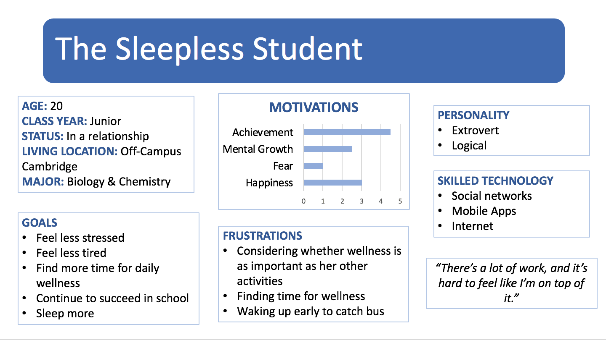
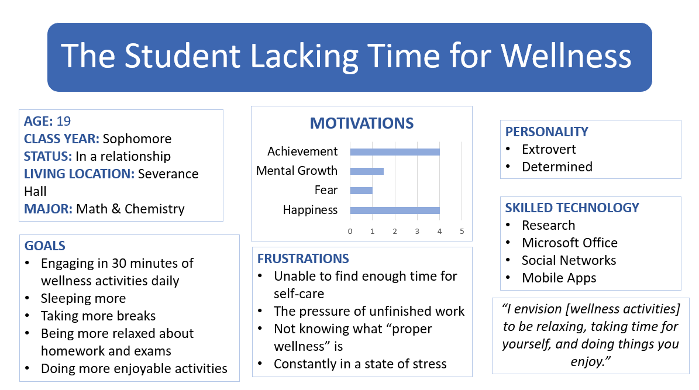
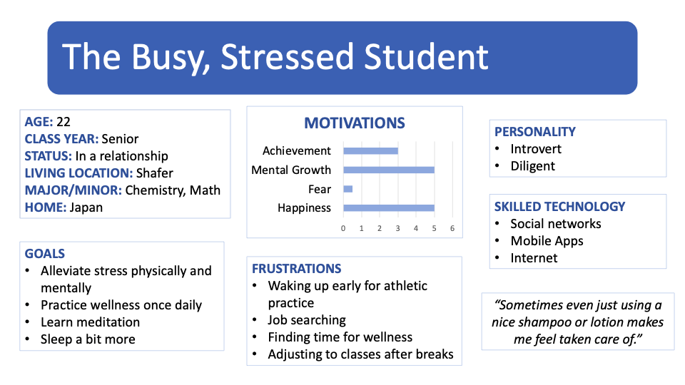

The student tackles an issue of not getting enough sleep and constantly feeling tired. She lives off campus and as a result, she has to ride the bus to Wellesley every morning at 8am. Interestingly, she feels like her time on the bus helps contribute to her wellness everyday, because she relaxes and naps on the bus. This provides good insight into what types of environments our users could be in while using our app, such as while on the go in transportation. She does not meditate but considers watching YouTube videos, listening to music, taking naps, playing video games, or anything that allows her to not have to think about school in the evenings as part of her wellness. Because she has such a variety of activities that contribute to her wellness, maybe we should include a variety of activity options on our app as well. Her current schedule does not allow her to spend the amount of time she would like to take for wellness but would like to take the time everyday. Ideally, she thinks spending 10-30mins per day is the appropriate amount of time to take for wellness activities. She is constantly stressed- about 4 times a week- and usually sleeps about 6 hours each night, while she ideally would like to sleep 8 or 9 hours. Her current goals and top priority is finding an internship for the summer. Because she understands the importance of a Junior year summer internship, she is placing more stress on herself and has been interviewing and applying to numerous opportunities. She is simultaneously trying to maintain good grades on her school work while starting to study for the GRE since she wants to eventually go to graduate school. Although she knows that wellness could help reduce her stress, her biggest challenge is trying to consider wellness as important as her other activities. Therefore, while creating our app, I think one of our biggest challenges is convincing people of the ease and benefits of the services our app offers.
The student feels that emotional and mental health is very important, but doesn’t think the importance of it is reflected enough in her life. She views wellness as taking time for herself to decompress and to relax, and to do activities that she enjoys. She says that spending time talking to friends is her way of reducing stress. Therefore, the student finds self-care activities to be personalized and specific to users. We may take this information into account when creating options for recommending different wellness activities. As an athlete on the fencing team, she has meditated before in practices, but is unsure about its positive benefits and whether it has helped her to relax when she has schoolwork. The student believes that she doesn’t get enough sleep about once or twice a week, or once every other week. She usually gets around 6 to 7 hours of sleep a night, but would ideally like to sleep 8 hours. The student feels stressed on a daily basis, but also believes that practicing self-care will positively impact her stress levels. A goal of hers is to practice half an hour of self-care activities every day. Clearly, she finds self-care to be meaningful and necessary, but faces difficulties in practicing as much wellness as she intends to. She claims to have difficulty scheduling in time for wellness because she feels pressured to get work done before taking a break. To conclude, the largest obstacle to taking enough time for wellness for this student is the stress resulting from uncompleted homework. A challenge we may face is ensuring that users of our product feel compelled to engage with the notifications and reminders for self-care activities.
This particular student is an extremely busy and often stressed senior at Wellesley College. She is majoring in Chemistry with a minor in Math, and is also an athletic team captain, international student, and works part time as a tutor. Additionally, she also searched for jobs and was actively recruiting this past Fall semester. Her stressful moments are usually comprised of exam periods, athletic practice and match times, recruiting stress, and adjusting to classes after long periods of break. However, this student is a big proponent for wellness. She believes there’s two main parts to overall wellness: physical wellness and mental/spiritual wellness. Based on her beliefs, we can conclude that this student categorizes different kinds of wellness, but they are all necessary together. She practices physical wellness via her athletic practices and logging her diet and sleep, and mental/spiritual wellness by trying to surround herself with good people and getting off campus often. She hopes to learn how to meditate for wellness, so we can conclude that there is a demand for wanting to learn how to practice meditation and overall wellness. 1-2 hours of daily practice is her ideal amount, but at the minimum it should be 10 mins. Most of the time she does not get to practicing self-care and wellness, but she tries to make up for the periods of neglect. An interesting thing this student mentioned is that she feels that even little things like using a nice shampoo, soap, or lotion makes her feel taken care of. This means that there is a connection between feeling taken care of and loved with mental wellness.



Common problems/issues: Prioritizing wellness in a busy schedule, even if there is some interest. People have different ideas of what wellness is, and different levels of wanting to expand their definitions of wellness.
Student Population: Students who don’t have enough time for wellness/feel that they don’t prioritize wellness enough
Platform: Mobile- ideal for people on the go in different environments, busy people, and for providing reminders and notifications
General Design Guidelines: Have options for what kind of wellness activities to do (meditation, stretching, breathing exercises, etc.). Incorporate Google/Apple calendar so the product will seamlessly incorporate wellness into the student’s schedule.